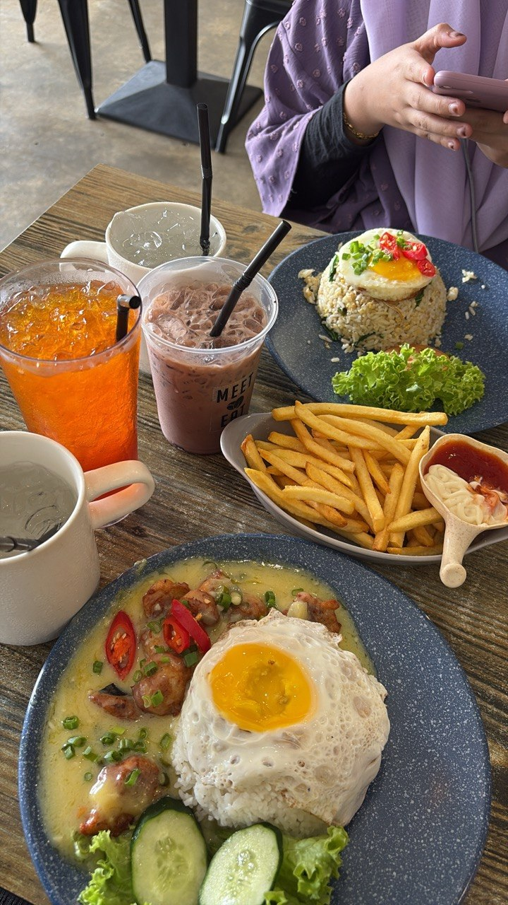
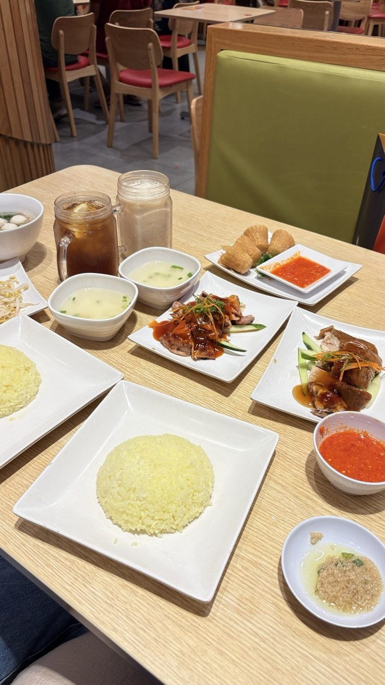
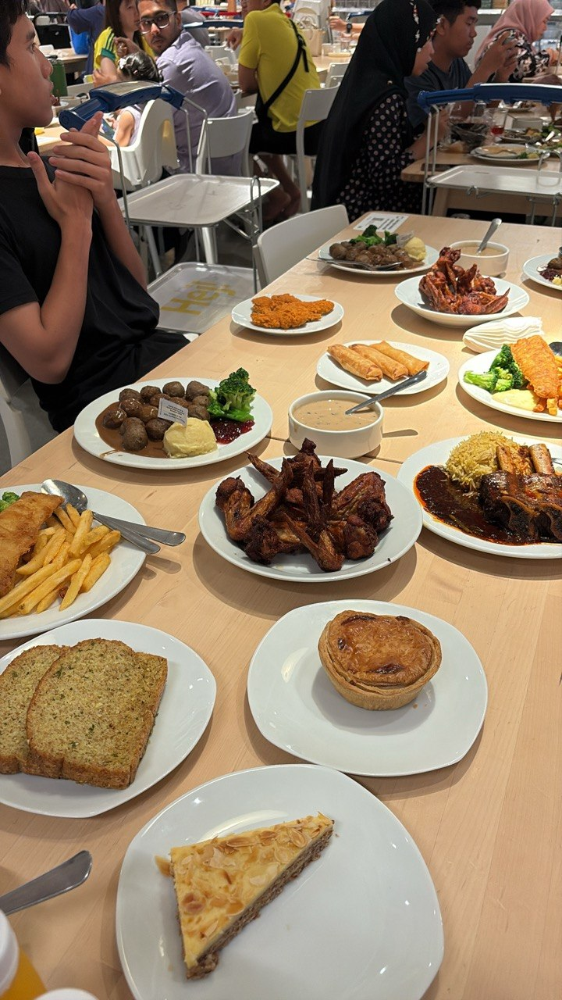
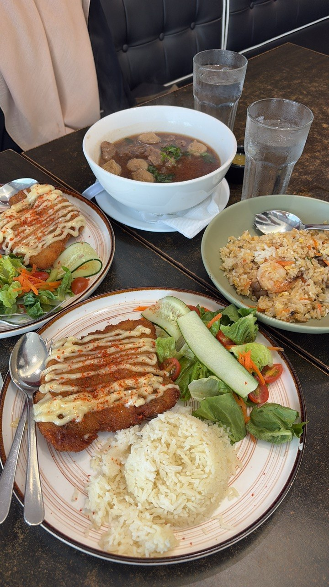
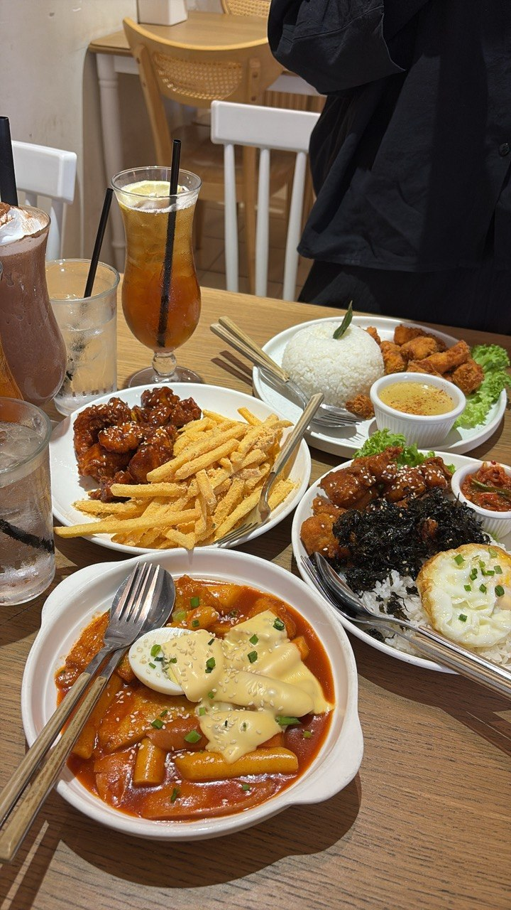
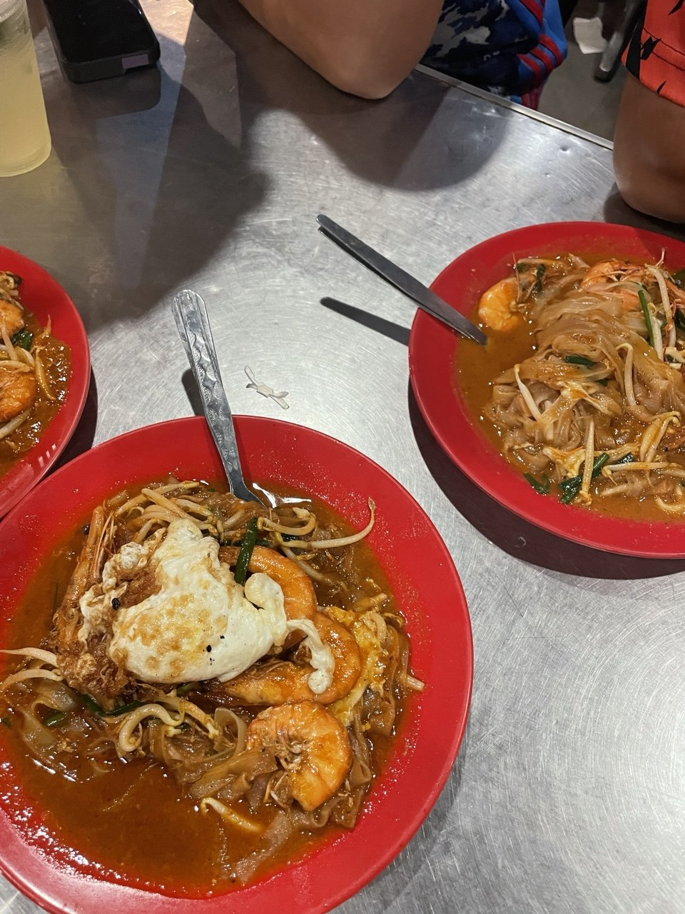

Food is one of the simple things that brings happiness into my life. I enjoy trying different dishes and exploring new flavours. Below are some of my favourite foods that I always enjoy eating.

📍Meet & Eat

📍The Chicken Rice Shop

📍IKEA

📍Secret Recipe

📍The Baeshake Cafe

📍Char Kuey Teow Sungai Dua